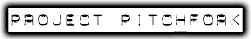
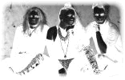
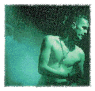

|  |  | |
 Página Strum&Drag (Club Español de
Project) | ||
Project Pitchfork son, en comparación a otros grupos, de un sonido más depurado y tranquilo, (aunque bailable). Provenientes también de Alemania. Se les podría situar a medio camino entre el dark-EBM y dark más duro (representado, en mi opinión, por Calva y Nada). Es uno de mis grupos favoritos. En la red existe también grna información sobre llos, incluso te puedes bajar ficheros MPEG de sus canciones de gran calidad (aunque tardan un buen rato en llegar). |
||